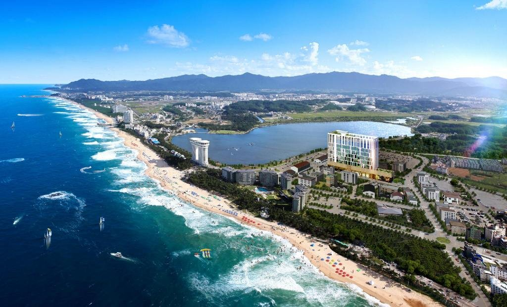

관동(關東)의 명승지로 널리 알려진 경포는 경포호 호반에 산재한 경포대(鏡浦臺:강원유형문화재 6), 강릉 해운정(海雲亭:보물 183), 경호정(鏡湖亭), 금란정(金蘭亭), 방해정(放海亭), 호해정(湖海亭), 석란정(石蘭亭), 창랑정(滄浪亭), 취영정(聚瀛亭), 상영정(觴詠亭) 등의 여러 정자와 누각, 경포해수욕장 및 주변의 송림지대를 모두 가리킨다.경포호는 수면이 거울같이 맑기 때문에 붙은 이름인데 경호라고도 하고 사람에게 유익함을 준다고 해서 군자호(君子湖)라고도 한다.
호수 한가운데 자리잡은 바위는 각종 철새들이 찾아와 노는 곳으로 새바위라 하며, 조선 숙종 때 송시열(宋時烈)이 쓴 ‘조암(鳥岩)’이라는 글씨가 남아 있다. 1982년 경포를 포함하는 이 일대가 경포도립공원으로 지정되었다.